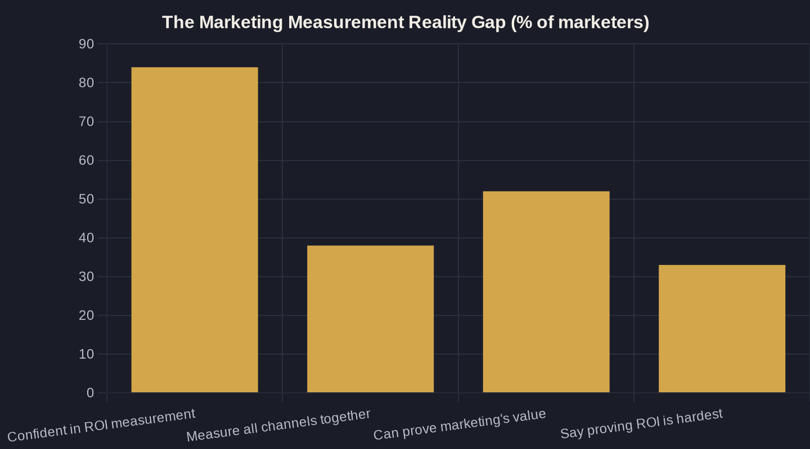

Marketing That Pays: The Local Owner's Guide to Knowing What Every Dollar Returns
A plain-English system for tracing what a single dollar of marketing actually returns — impression to lead to booked job to revenue — so you can stop guessing and start deciding.

Key takeaways
- Marketing ROI for local business means tracing one dollar through five steps — impression, lead, booked job, revenue, and ROAS plus payback. If you can't follow it the whole way, you have a spend number, not an ROI number.
- There is a confidence gap: 84% of marketers feel confident in their ROI measurement but only 38% actually measure traditional and digital channels together, and just 52% of leaders can prove marketing's value.
- For local service businesses, 37% of digital leads convert on the phone — so tracking that stops at the web form undercounts your true return and credits the wrong half of the funnel.
- Benchmark against real numbers ($5.42 average CPC, 8.18% conversion rate, $66.69 cost per lead), but your real scoreboard is cost per booked job, not cost per lead.
- Most marketing doesn't fail dramatically — it leaks. Sealing leaks (slow phones, untracked calls, wasted spend) usually beats buying more traffic dollar for dollar.
What Marketing ROI for Local Business Really Means
Most owners can tell you what they spent on advertising last month down to the dollar. Far fewer can tell you what that spend actually returned. Marketing ROI for local business is the discipline of closing that gap — tracing every dollar from the moment it buys an impression to the moment it produces revenue you can deposit.
I call the method Owner's Math: ROI (return on investment) measured the way an owner would settle a bill, not the way an agency dashboard dresses it up. It follows one dollar through five honest steps — impression, lead, booked job or visit, revenue, and finally ROAS (return on ad spend) and payback period. If you cannot follow the dollar through all five, you do not have a marketing ROI number; you have a spend number with a confident story attached to it.
This guide is the hub for that system, and each linked piece below goes deep on one part of the chain. The core idea stays the same throughout: the candor is the product, and the first honest number you produce is worth more than ten flattering ones.
The Confidence Gap That Quietly Costs Owners Money
Here is the uncomfortable part. Marketers feel far more measured than they actually are. In its 2024 Annual Marketing Report, Nielsen found that 84% of global marketers are extremely or very confident in their ROI measurement — up from 69% a year earlier — yet only 38% actually evaluate holistic ROI by measuring traditional and digital channels together. Confidence went up; the measurement underneath it did not.
That confidence-versus-reality gap is not confined to big brands. Gartner reports that only 52% of senior marketing leaders can prove the value of their marketing and get credit for it. When the people whose full-time job is measurement split roughly fifty-fifty on whether they can prove it, the local owner running ads between service calls deserves some grace — and a better system.
The difficulty is real and widely felt. HubSpot found that one-third of marketing leaders (33%) — and 40.8% of U.S. leaders — say proving return on investment is the hardest part of their job. For a local business, that difficulty has a precise name: the attribution gap, the space between what your reporting claims and what your bank account confirms.
The cost of that gap is not abstract. Every budget decision you make on top of a number you cannot trace is a guess wearing the costume of a measurement, and guesses are expensive at scale.
Tracing the Dollar: The Owner's Math Chain
Every marketing ROI number for a local business is built from one chain. A dollar buys impressions; impressions produce clicks; clicks become leads; leads become booked jobs; booked jobs become revenue. Break any single link and every number above it turns into fiction — a healthy-looking report sitting on a broken foundation.
The link owners miss most often is the one that happens off-screen. Invoca's benchmarks show that 37% of leads generated by digital marketing convert on the phone call, which means for many local service businesses the booked-job moment happens on a call, not a web form. If your tracking stops at the form submission, you are crediting the wrong half of your funnel and undercounting your true return.
Speed is the other hidden multiplier in the chain. The faster you answer a new lead, the more of them turn into jobs — which is why speed-to-lead is one of the highest-return levers an owner actually controls. Tighten that one response time and the whole chain above it pays better, with not one extra dollar of ad spend.
The discipline, then, is to measure the entire chain together rather than one convenient slice of it. The moment you only count what is easy to count — clicks, or forms — you reopen the attribution gap and start optimizing toward the wrong end of your own funnel.
Benchmarks: What Good Marketing ROI for Local Business Looks Like
You cannot judge marketing ROI for local business in a vacuum; you need benchmarks to know whether your numbers are healthy or quietly bleeding. Across more than 20 industries, LOCALiQ's search advertising data puts the average cost per lead at $66.69, the average conversion rate at 8.18%, and the average cost per click at $5.42 — concrete lines you can hold your own account against this afternoon.
Treat the table below as a starting line, not a finish line. Your industry, your city, and your close rate will move every figure, and a higher cost per lead can still be excellent ROI when those leads book bigger jobs. A $120 lead that turns into a $9,000 install is a far better trade than a $20 lead that books a $90 service call.
What the benchmarks price is the top of the funnel — clicks and leads. They do not, on their own, tell you what a customer is worth. Your real scoreboard sits further down at the cost per booked job, the one number that ties marketing spend directly to revenue instead of stopping at the contact form.
Run your own figures next to these averages. If your cost per lead is double the benchmark and your conversion rate is half of it, you have not found a marketing problem — you have found a measurable, fixable leak.
| Metric | Cross-industry average | What it tells you |
|---|---|---|
| Cost per click (CPC) | $5.42 | What you pay for one visit from a searcher |
| Conversion rate | 8.18% | Share of clicks that turn into a lead |
| Cost per lead (CPL) | $66.69 | What one new lead costs before you close it |
| Leads that convert by phone | 37% | Booked-job moments that happen on a call, not a form |

Where Marketing ROI Quietly Leaks Away
Most local marketing does not fail in one dramatic moment; it leaks. A slow phone, an untracked call, a landing page that takes five seconds to load, a campaign nobody remembered to pause — each drains a few points of return until the whole program looks merely average instead of broken. Average is the disguise that keeps leaks alive.
Finding and sealing these marketing money leaks is almost always faster and cheaper than buying more traffic. An owner who recovers a 20% loss in conversion has effectively bought a fifth more leads at zero added ad cost — a better trade than any new campaign currently on the table.
This is exactly why the confidence gap is so expensive in practice. When you trust a dashboard that only counts form fills, the phone leaks, the speed leaks, and the wasted-spend leaks all stay invisible while the monthly report stays a reassuring shade of green.
The fix is not glamorous and it does not require a bigger budget. It requires tracing the chain once, honestly, and watching where the dollar stops moving forward.
Building a System That Proves What a Dollar Returns
A marketing ROI for local business that you can actually defend is a system, not a spreadsheet you dust off once a quarter. It connects your ad platforms, your call tracking, and your booking or CRM data so that one dollar in can be followed to one dollar — or ten — out, automatically and continuously, without a week of manual reconciliation.
This is where AI for local business earns its keep: not as a buzzword, but as the layer that watches the funnel every day, flags a leak before it compounds, and answers "what is this campaign worth" without spreadsheet archaeology. The goal is never more dashboards — it is fewer arguments about what is true.
Built well, that system turns the confidence gap inside out. Instead of feeling measured, you are measured, and every budget decision becomes a math problem with an answer rather than a debate about whose number to believe. That is the whole point of Owner's Math: to make the honest number the easy number.
Start With One Honest Number
You do not need to rebuild everything to begin. Pick one campaign and trace a single dollar all the way through Owner's Math — impression to lead to booked job to revenue — and you will usually surface both your real marketing ROI and the leak hiding right next to it. One honest pass tells you more than a year of green dashboards.
If you would rather not do that tracing alone, that is exactly the conversation I have with owners every week: one plain-English pass through your numbers, owner to owner, no agency fluff. Book a call, or join the newsletter where I break down a fresh Owner's Math teardown each week — and start knowing, instead of guessing, what every dollar returns.
Sources
Want this run on your numbers?
Book a call and we will run the Owner's Math on your business — clear numbers, a straight plan, no pitch. Or read the free Playbook first.